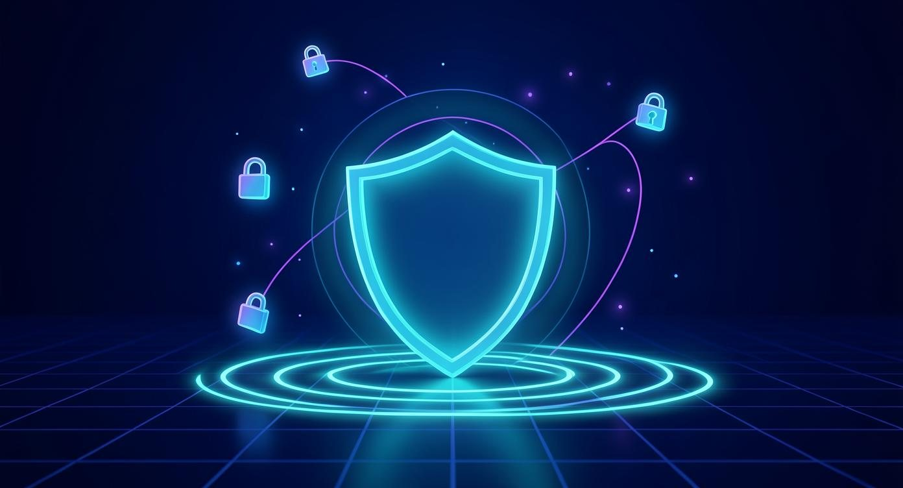
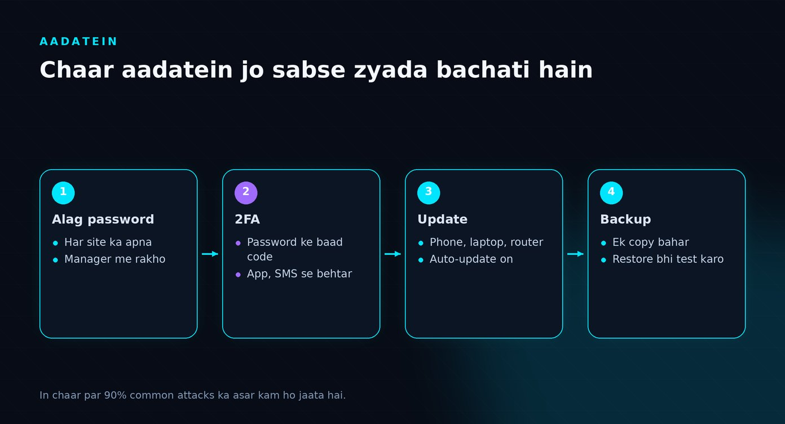
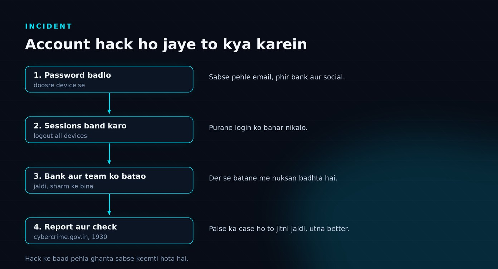

Cybersecurity Basics: 10 Aadatein Jo Aapko Bachati Hain

Cyber security की सबसे बड़ी सच्चाई यह है कि 90% हमले किसी बहुत होशियार hacker से नहीं आते। वे एक साधारण सी गलती से आते हैं — वही password दो जगह, एक link जो असली जैसा दिखता है, या एक update जो महीनों से pending है। इसीलिए सुरक्षा का सवाल "कौन सा antivirus लूँ" नहीं, "कौन सी आदत रोज़ निभाऊँ" है।
इस guide में मैं वही दस आदतें बताऊँगा जो सबसे ज़्यादा बचाती हैं, phishing पहचानने के पाँच संकेत, password manager की ज़रूरत, 2FA के तीन तरह, UPI और OTP fraud से बचाव, और अगर account hack हो जाए तो पहले घंटे में क्या करना है। साथ में छोटी team या office के लिए पाँच नियम भी।
छोटा जवाब: हर site का अलग password, password manager, 2FA चालू, सब कुछ auto-update, और एक ऐसा backup जिसे restore करना आता हो — इन पाँच से ही ज़्यादातर नुकसान रुक जाता है। बाकी सब इन्हीं के आसपास है। सुरक्षा महंगे tools से नहीं, इन आदतों को निभाने से बनती है।
Cybersecurity kya hai — तीन चीज़ें जो बचानी होती हैं
सुरक्षा में तीन चीज़ें होती हैं जिन्हें बचाना होता है। पहली — गोपनीयता: आपका data सिर्फ़ उन्हें दिखे जिन्हें दिखना चाहिए। दूसरी — सत्यता: जो data है वह बदला न गया हो। तीसरी — उपलब्धता: जब चाहिए, तब मिले।
हर हमला इन्हीं तीन में से किसी एक पर लगता है। Phishing गोपनीयता तोड़ता है, ransomware सत्यता और उपलब्धता दोनों, और DDoS सिर्फ़ उपलब्धता। जब आप कोई सुरक्षा कदम सोचें, तो पूछें — यह किस चीज़ को बचा रहा है। इससे फिज़ूल के tools से बचा जा सकता है।
दस आदतें जो सबसे ज़्यादा बचाती हैं

- हर account का अलग password। एक जगह leak हुआ password दूसरी जगह न चले — यही सबसे बड़ी सुरक्षा है।
- Password manager। अलग-अलग लंबे passwords याद नहीं रखे जा सकते; manager यह काम आपके लिए करता है।
- 2FA चालू करें। Password चोरी भी हो जाए, तो दूसरा कदम बचा लेता है।
- Update को टालें नहीं। ज़्यादातर हमले पुराने, known bugs से होते हैं जिनका fix पहले से मौजूद है।
- Backup रखें — और restore test करें। Backup वह है जिसे आपने एक बार वापस लाकर देखा हो।
- Link पर सीधे click न करें। Bank, courier या government के नाम से आए link को app में खुद खोलें।
- OTP किसी को न बताएँ। कोई भी असली company OTP नहीं माँगती — न कॉल पर, न chat में।
- Public Wi-Fi पर login से बचें। ज़रूरत हो तो mobile hotspot या VPN इस्तेमाल करें।
- App permissions जाँचें। एक torch app को contacts और location की ज़रूरत नहीं होती।
- Screen lock और device encryption। फोन खोया तो भी data सुरक्षित रहे।
इनमें पहली चार सबसे ज़्यादा असर करती हैं। अगर आज सिर्फ़ चार चीज़ें कर सकें, तो यही करें — password manager, 2FA, auto-update और backup.
Phishing कैसे पहचानें
Phishing वह हमला है जिसमें आपको ऐसा message भेजा जाता है जो किसी भरोसेमंद की तरफ़ से लगे — bank, delivery company, सरकारी विभाग, या आपका boss. मकसद एक ही होता है: आपसे password, OTP या पैसे लेना।
पाँच संकेत
1. जल्दबाज़ी। "24 घंटे में account बंद हो जाएगा", "आज ही verify करें" — डर पैदा करके सोचने का समय छीना जाता है। असली companies ऐसा दबाव नहीं बनातीं।
2. Link का पता। Text में लिखा नाम और असली URL अलग होते हैं। Link पर hover करके या दबाकर देखें — sbi-verify.xyz कभी bank का domain नहीं होता।
3. भाषा की गलतियाँ। असली bank के email में spelling और grammar ठीक होते हैं। हालाँकि अब AI से यह गलती कम हो रही है, इसलिए इसे अकेला संकेत न मानें।
4. अनचाहा attachment। Invoice, challan या "photo" के नाम से आई file खोलने से पहले सोचें कि क्या आपको इसकी उम्मीद थी।
5. Payment का नया तरीका। "सिर्फ़ इस QR पर scan करके pay करें" या "gift card से भेजें" — यह लगभग हमेशा fraud होता है।
एक आदत जो सबसे ज़्यादा बचाती है: message में दिए link से कभी login न करें। App खोलें या address bar में खुद URL लिखें। अगर message सच में bank से था, तो app में वह notification दिखेगा।
Password manager क्यों ज़रूरी है
लोग एक ही password कई जगह इस्तेमाल करते हैं क्योंकि 40 अलग-अलग लंबे passwords याद रखना असंभव है। Password manager यह समस्या हल करता है: वह हर site के लिए लंबा random password बनाता है, सँभालकर रखता है, और आपको सिर्फ़ एक master password याद रखना होता है।
तीन बातें ध्यान रखें। पहला — master password लंबा और याद रखने लायक वाक्य हो, जो कहीं और इस्तेमाल न हो। दूसरा — 2FA manager पर भी चालू करें। तीसरा — recovery codes कहीं छापकर या सुरक्षित जगह रखें, क्योंकि manager का access खोने पर सब कुछ अटक सकता है।
एक आम शंका यह होती है कि सारे passwords एक जगह रखना सुरक्षित है या नहीं। सच यह है कि manager का data encrypted होता है और उसे खोलने की key आपके master password से बनती है — company को भी वह नहीं पता होती। जोखिम तब है जब master password कमज़ोर हो या आपके device में malware हो। इसलिए master password लंबा रखें, device को lock रखें, और manager के recovery codes सुरक्षित जगह रखें।
Browser में built-in manager भी ठीक शुरुआत है, पर एक dedicated manager family के devices में sharing और notes जैसी सुविधा देता है। जो भी चुनें, उसे इस्तेमाल करना शुरू करें — perfect manager न होने से बेहतर है कोई manager होना।
2FA: तीन तरह, तीन स्तर
SMS OTP: सबसे आम, पर सबसे कमज़ोर। SIM swap और OTP intercept के cases होते हैं। फिर भी यह बिना 2FA से बहुत बेहतर है।
Authenticator app: हर 30 सेकंड बदलने वाला code, जो device पर बनता है। SMS से बेहतर, क्योंकि network से नहीं आता।
Passkey या hardware key: सबसे मज़बूत। Passkey में password की जगह device की cryptography होती है, इसलिए phishing लगभग बेकार हो जाती है। जहाँ support हो, वहाँ इसे चुनें।
अगर सब जगह passkey नहीं है, तो क्रम यह रखें: जहाँ मिले passkey, बाकी जगह authenticator app, और जहाँ सिर्फ़ SMS है वहाँ SMS — पर उन accounts को प्राथमिकता दें जहाँ पैसा या पहचान है: email, bank, UPI, और सोशल media.
UPI, OTP aur phone scams
भारत में सबसे आम fraud तीन तरह के हैं। पहला — "मैंने गलती से आपके account में पैसे भेज दिए, वापस कर दीजिए" वाला message, जिसमें असल में वे आपसे पैसे माँगते हैं। दूसरा — "आपका KYC बंद हो जाएगा" कहकर एक app install कराना, जो notifications पढ़कर OTP चुरा लेती है। तीसरा — part-time job या investment का लालच, जिसमें पहले थोड़ा पैसा मिलता है और फिर बड़ी रकम माँगी जाती है।
एक और आदत: किसी भी अपरिचित नंबर से आए payment request को reject करें, चाहे स्क्रीन पर "refund" लिखा हो। UPI में request accept करने का मतलब है पैसे जाना — और यही सबसे आम धोखा है। अगर किसी कॉल पर दबाव महसूस हो, तो कॉल काटें और खुद bank के official नंबर पर callback करें। असली अधिकारी कभी नाराज़ नहीं होते कि आपने सावधानी बरती।
तीन सुनहरे नियम। UPI में पैसे भेजने के लिए PIN लगता है — पैसे लेना कभी PIN नहीं माँगता। कोई भी screen share app (जैसे remote support tools) बैंक के काम के लिए नहीं चाहिए। और OTP सिर्फ़ आपके लिए है, किसी के लिए नहीं — चाहे वह "bank officer" ही क्यों न कहे।
अगर fraud हो जाए, तो सबसे तेज़ रास्ता है cybercrime.gov.in पर शिकायत और helpline 1930. पैसे का मामला हो तो जितनी जल्दी report, उतना ज़्यादा chance कि transaction रुक सके। Bank को भी तुरंत बताएँ और card/UPI को block कराएँ।
Account hack ho jaye to क्या करें

- दूसरे device से password बदलें। अगर email hack हुआ है, तो पहले email — क्योंकि बाकी सब उसी से reset होता है।
- सभी sessions logout करें। Settings में "log out of all devices" विकल्प ढूँढें, वरना attacker का login चलता रहेगा।
- Recovery options जाँचें। Backup email, phone number और app passwords देखें — attacker अक्सर इन्हीं में अपना नंबर जोड़ देता है।
- 2FA फिर से सेट करें और पुराने app passwords रद्द करें।
- दोस्तों और team को बताएँ, क्योंकि आपके account से उन्हें भी message जा सकते हैं।
- Report करें — bank, platform और ज़रूरत हो तो cybercrime.gov.in पर।
इसके बाद एक हफ़्ता ध्यान से देखें: नए devices, नए forwarding rules, नए payment contacts. अगर पैसा गया है, तो bank को लिखित शिकायत दें और acknowledgement रखें।
छोटी team या office के पाँच नियम
1. Shared password नहीं। एक ही login सबको देने से पता नहीं चलता कि किसने क्या किया। हर इंसान का अपना account हो।
2. Admin access कम लोगों को। जिसे ज़रूरत नहीं, उसे admin न दें। जब कोई चला जाए, तो उसका access उसी दिन बंद करें।
3. Secrets code में नहीं। API keys और passwords code या repo में न रखें; environment variables या secret manager में रखें।
4. Backup और restore test। हर महीने एक बार किसी random file को restore करके देखें। जो backup कभी restore नहीं हुआ, वह backup है या नहीं, पता नहीं।
5. Phishing की छोटी drill. साल में एक बार नकली phishing email भेजकर देखें कि कितने लोग click करते हैं। यह डराने के लिए नहीं, सिखाने के लिए है।
घर के लिए एक आख़िरी बात — router का default password बदलें और firmware update चालू रखें। ज़्यादातर घरों में router वर्षों तक वही password लिए चलता रहता है, और वही सबसे आसान दरवाज़ा बन जाता है। Smart devices — camera, TV, speaker — को अलग Wi-Fi network पर रखना बेहतर है, खासकर अगर घर से काम होता हो।
Mera anubhav
मेरे एक दोस्त का email hack हुआ क्योंकि उसने एक "courier tracking" link खोला और वहाँ email password डाल दिया। सबसे चौंकाने वाली बात यह नहीं थी कि hack हुआ — बल्कि यह थी कि उसके account में 2FA चालू था, पर recovery email पुराना था जिसका access attacker के पास पहले से था। उस दिन मैंने अपने सारे recovery options दोबारा जाँचे।
दूसरी बात जो मैंने सीखी: सुरक्षा में सबसे कमज़ोर कड़ी अक्सर सबसे पुरानी चीज़ होती है — पुराना फोन नंबर, पुराना email, पुराना password जो किसी पुराने account में अब भी चल रहा है। साल में एक बार बैठकर यह सूची साफ़ करना किसी नए tool से ज़्यादा फायदा देता है।
तीसरी बात: डर से सुरक्षा नहीं बनती। जो लोग डरकर हर चीज़ बंद कर देते हैं, वे कुछ दिन बाद थककर सब कुछ खोल देते हैं। छोटी आदतें जो हमेशा निभ सकें, बड़े नियमों से बेहतर हैं।
नतीजा
Cyber security कोई एक product नहीं, आदतों की परत है। आज चार चीज़ें करें — password manager, 2FA, auto-update और एक restore-tested backup. उसके बाद link पर click करने से पहले रुकने की आदत डालें, और OTP किसी से साझा न करें। इतने से ही आप उन 90% हमलों से बाहर आ जाते हैं जो सिर्फ़ एक गलती का इंतज़ार करते हैं।
अक्सर पूछे जाने वाले सवाल
क्या antivirus ज़रूरी है?
Windows और Android में built-in protection काफ़ी अच्छी है। Antivirus तब मदद करता है जब आप बहुत सारी बाहर की files खोलते हों — पर वह password और 2FA की जगह नहीं ले सकता।
क्या free VPN सुरक्षित है?
हमेशा नहीं। Free VPN अक्सर आपका data बेचकर चलते हैं। ज़रूरत हो तो भरोसेमंद paid VPN या mobile hotspot इस्तेमाल करें।
Password manager का master password भूल जाएँ तो?
ज़्यादातर managers में recovery नहीं होता — यही उनकी सुरक्षा है। इसलिए recovery codes और एक लिखा हुआ emergency kit सुरक्षित जगह रखें।
क्या public computer पर login करना ठीक है?
सिर्फ़ ज़रूरत में, और हमेशा private/incognito window में। काम के बाद logout करें और browser को बंद करें। बैंक या email के लिए बेहतर है टालना।
Fraud की शिकायत कहाँ करें?
cybercrime.gov.in पर online शिकायत, या helpline 1930. साथ में bank को भी तुरंत सूचित करें और transaction की details संभालकर रखें।